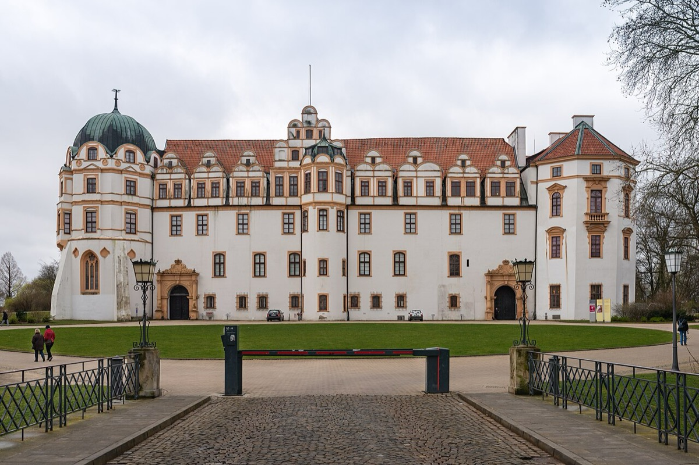

The two poles: Reincken's Hamburg, France at Celle

The Obituary records two journeys out from the Lüneburg base — two orbits, really, since he made them repeatedly — and honesty requires saying at once how we know: only from the family's telling, half a century later. No account book logs the trips, no letter dates them, and this card carries its tradition flag accordingly. But neither claim is doubted in substance, because the destinations left fingerprints all over the music, and the fingerprints are not in dispute.
The first orbit ran north — thirty miles, "several times," on foot — to Hamburg, and to the church of St. Catherine's, where Johann Adam Reincken presided over one of the legendary organs of Europe. It was an instrument on the scale of civic architecture: four manuals, and in the facade a 32-foot principal — a pipe speaking two octaves below the bass staff, so large it reads as structure rather than instrument. On it Reincken embodied the stylus phantasticus, the free, theatrical, improvisatory manner that was the northern school's signature: music as spectacle and rhetoric, the organ as a one-man drama. This was the most spectacular organ playing in Germany on one of its greatest machines, and a schoolboy walked thirty miles to stand under it, more than once. The impression held for a lifetime — Bach later testified to the organ's glory in exact registrational detail, praising its reeds to the end of his days, the way other men remember a first landscape. And the orbit closed, extraordinarily, two decades later in the same city, when the walker returned as a master and played for the old man himself.
The second orbit ran south, fifty miles, to Celle, and it pointed in a different direction entirely: toward France. Duke Georg Wilhelm kept a court there modeled deliberately on Versailles, orchestra included — Lully's bowing discipline, the French dance idioms, the agréments, that codified vocabulary of ornaments by which French music turned decoration into grammar. The Obituary says Bach heard the band often enough to absorb the style thoroughly; how a poor scholarship boy got through the door it does not say, and scholars suspect the school's noble connections, or perhaps service as an accompanist, supplied the access. However he managed it, the French style entered him not from treatises or secondhand copies but as living sound — an entire national manner, performed by specialists, fifty miles from his school desk.
Locate the two poles on the education track and the design of the whole becomes visible. The north gave him the organ: scale, fantasy, the sacred sublime, an instrument that could fill a stone building with weather. Celle gave him France: dance, ornament, orchestral discipline, elegance as a form of rigor. The French suites, the ouvertures, the ornament tables of his maturity all have their receipts in these two years; so, on the other side, does the tradition of vast, visionary organ rhetoric he would inherit and surpass. Add the Pachelbel line he had already absorbed in Ohrdruf, and — still to come — Italy, taken in by transcription at Weimar, and the recipe is complete. Bach never left Germany — never saw Versailles itself, or Venice, or any of the capitals whose styles he commanded. But by the age of twenty he had assembled all of musical Europe, on foot and by hand — walking to what could be heard, copying what could be held — and the synthesis of those gathered styles is not a feature of his genius. It was the genius.
That is why this card, thinly documented as it is, earns its place on the timeline. The trips themselves come to us as family memory; the education they delivered is audible in hundreds of surviving works. A boy with no money and no patron built, out of a schoolboy's free days and his own two feet, a curriculum that no institution in Europe could have offered him. The geography deserves to be filed and remembered: north to the organists, south to the French. Everything later is downstream of the walking.
Continue with the era essay: Lüneburg: the northern education, or go on to the missing ingredient: Italy by transcription, at Weimar.
The Obituary (Nekrolog), 1754 (New Bach Reader)
Wolff, The Learned Musician, ch. 3
→ full bibliography & links